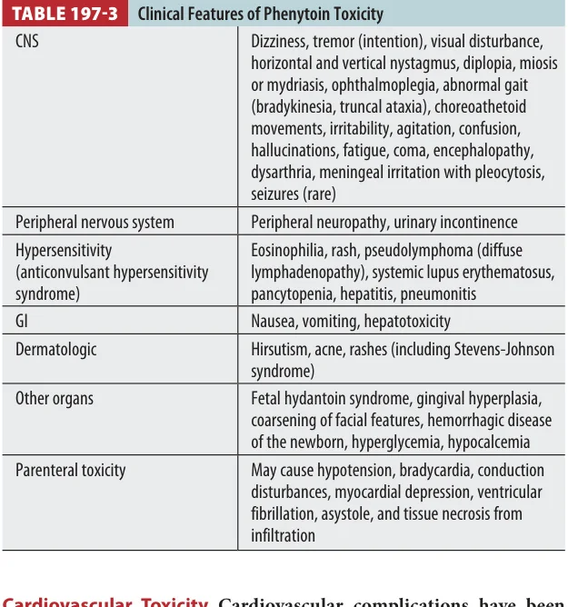
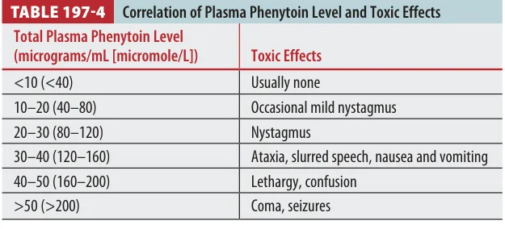
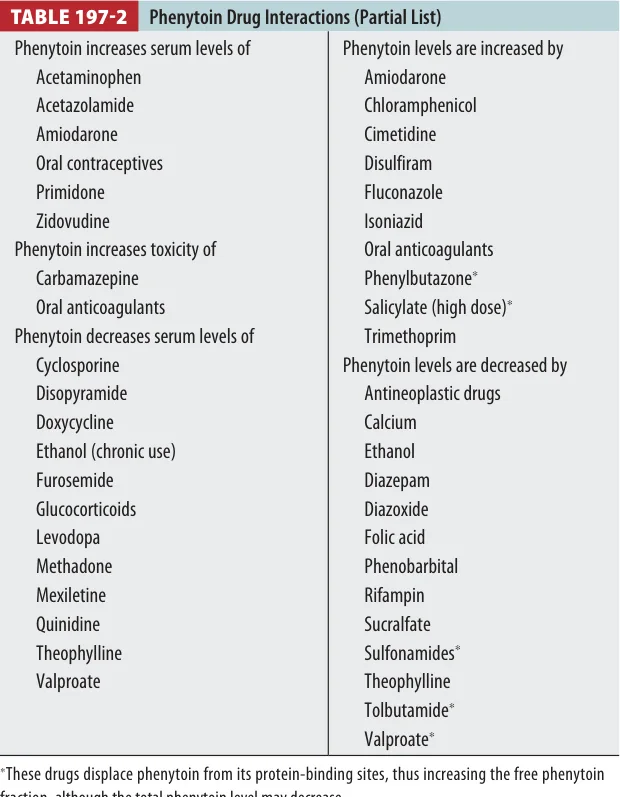
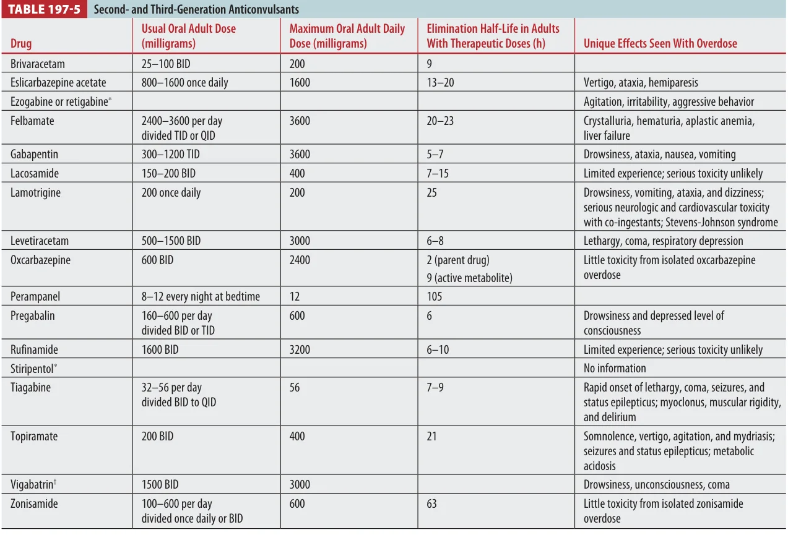

Anticonvulsant overdose is not one disease. The board move is to sort the patient into sedative-hypnotic depression, sodium-channel blockade, hyperammonemic valproate toxicity, or a delayed/erratic absorption pattern that requires serial reassessment.
Fast triage: get an ECG early. A wide QRS points toward sodium-channel blockade, especially carbamazepine, lamotrigine, or severe mixed ingestion.
Overview: Sort by Syndrome
Classic first generation Phenytoin, carbamazepine, valproate, phenobarbital, primidone, ethosuximide. These have better-described levels, kinetics, and antidote/support patterns.
Second/third generation Many isolated overdoses are less severe, but lamotrigine, topiramate, and tiagabine can still create board-relevant toxicity.
Clinical level mismatch Drug levels help, but clinical status wins. Chronic exposure, delayed-release products, coingestions, albumin, renal function, and active metabolites can make the number misleading.
Tintinalli Source Check
Table 197-1 is useful as the map for first-generation agents: half-life, usual dose, and which drug may linger long enough to need serial levels.
Phenytoin pearl: toxicity is mostly cerebellar and vestibular: nystagmus, ataxia, dysarthria, tremor, confusion. Severe coma or seizures are unusual but possible in very high levels or mixed ingestions.
Kinetics that matter
Phenytoin is highly protein bound. The free, unbound fraction rises with renal failure, hypoalbuminemia, malnutrition, pregnancy, burns, cirrhosis, or displacement by other drugs. A "therapeutic" total level can still be clinically toxic when the free fraction is high.
Metabolism becomes capacity-limited at higher levels. Small dose increases can cause a disproportionate rise in level and longer half-life. After overdose, absorption can be slow and incomplete, so serial levels may be needed.
Tintinalli Source Check
Tables 197-3 and 197-4 anchor the phenytoin pattern: neuro findings rise with level; parenteral toxicity adds cardiovascular collapse and soft-tissue injury.

Tintinalli Table 197-3. Clinical features of phenytoin toxicity.

Tintinalli Table 197-4. Correlation of plasma phenytoin level and toxic effects.
Drug Interaction Check
Phenytoin has many interactions. Use this table when a question gives a patient on warfarin, amiodarone, sulfonamides, valproate, alcohol, diazepam, rifampin, or phenobarbital.

Tintinalli Table 197-2. Partial list of phenytoin drug interactions.
Parenteral danger: IV phenytoin toxicity is driven by the formulation and infusion: hypotension, bradycardia, conduction delay, ventricular dysrhythmia, and extravasation injury. Fosphenytoin is less irritating but still needs monitoring.
Carbamazepine
Carbamazepine is chemically related to imipramine, and overdose can behave like a mixed anticholinergic plus sodium-channel blocker.
Delayed course Slow/erratic absorption and anticholinergic ileus can cause a delayed clinical deterioration or crescendo-decrescendo course.
ECG risk QRS widening and dysrhythmia are uncommon but important. If QRS widens, think sodium bicarbonate.
Board trap: carbamazepine can cause a false-positive TCA screen. Do not anchor on TCA if the history, level, or medication list fits carbamazepine.
Levels are imperfect but useful for trend. Severe poisoning is associated with higher concentrations and clinical findings such as seizures, respiratory failure, coma, and cardiac conduction defects. Because absorption is delayed, repeat levels and repeat ECGs matter.
Valproic Acid / Valproate
Valproate pearl: the killer pattern is CNS depression plus hyperammonemia, sometimes with cerebral edema, hepatotoxicity, shock, or metabolic abnormalities.
Peak levels can be delayed with enteric-coated or controlled-release preparations. Toxicity may include CNS depression, respiratory depression, hypotension, hypoglycemia, hypocalcemia, hypernatremia, hypophosphatemia, anion gap metabolic acidosis, elevated aminotransferases, ammonia elevation, lactate elevation, pancreatitis, and thrombocytopenia.
Valproate can produce a positive urine/blood ketone result because it is partly eliminated as ketone bodies. In symptomatic patients, trend valproate level, ammonia, LFTs, electrolytes, acid-base status, and mental status.
L-carnitine: consider when valproate toxicity has lethargy, coma, hyperammonemia, or hepatic dysfunction. It is not a magic "wake-up" drug, but it supports mitochondrial metabolism and may help severe toxicity.
Extracorporeal removal is considered in severe valproate overdose, especially with coma, shock, cerebral edema, very high levels, severe acidosis, or failure to improve with supportive care and toxicology/nephrology input.
Other Anticonvulsants
Tintinalli Source Check
Table 197-5 is the quick comparison table for second- and third-generation agents. Most isolated ingestions are less toxic, but the exceptions are very testable.

Tintinalli Table 197-5. Second- and third-generation anticonvulsants.
Lamotrigine Drowsiness, vomiting, ataxia, dizziness. Severe cases can have QRS widening, QT prolongation, seizures, status epilepticus, coma, and coingestant-amplified cardiovascular toxicity.
Topiramate Somnolence, vertigo, agitation, mydriasis, seizures/status epilepticus, and metabolic acidosis.
Levetiracetam Usually supportive care; lethargy can progress to coma or respiratory depression in severe cases.
Gabapentin / pregabalin Drowsiness, ataxia, nausea/vomiting; prolonged depression is more likely with renal disease or mixed sedatives.
Phenobarbital / primidone Long half-life; barbiturate-style supportive care and possible enhanced elimination in severe toxicity.
Diagnosis and Monitoring
Always early ABCs, glucose, ECG, continuous cardiac monitoring if symptomatic, pregnancy test when relevant, acetaminophen/salicylate if intentional or unclear ingestion.
Drug levels Phenytoin, carbamazepine, valproate, phenobarbital when available. Use serial levels for delayed absorption or extended-release products.
Phenytoin nuance Consider free phenytoin or albumin-adjusted interpretation when albumin/renal status makes the total level unreliable.
ECG lens: QRS widening means sodium-channel blockade until proved otherwise. Treat the patient and ECG, not just the serum concentration.
Treatment Framework
Support first Airway, oxygenation, ventilation, IV access, fluids, vasopressors if needed. Correct glucose and major electrolytes.
Seizures Benzodiazepines first. Escalate per status epilepticus pathway. Avoid reflexively giving the same toxic anticonvulsant.
QRS widening Sodium bicarbonate boluses for carbamazepine/lamotrigine-like sodium-channel blockade.
Charcoal Single-dose charcoal if early and airway protected. Multidose activated charcoal may be considered for carbamazepine, phenobarbital, and select delayed-release ingestions with poison center guidance.
Valproate L-carnitine for severe symptomatic toxicity; extracorporeal removal for selected severe cases.
Newer agents Mostly supportive, but treat ECG abnormalities, seizures, coma, respiratory depression, and acidosis aggressively.
Drug Dose Reference
Intervention
Adult dose
Pediatric dose
When to use
Activated charcoal
50 g PO/NG once
1 g/kg PO/NG, max 50 g
Early ingestion, protected airway. Does not reverse toxicity.
Multidose activated charcoal
25-50 g PO/NG every 4 h
0.5 g/kg every 4 h
Consider for carbamazepine or phenobarbital after toxicology/poison center input.
Sodium bicarbonate
1-2 mEq/kg IV bolus; repeat to narrow QRS
1-2 mEq/kg IV bolus
QRS widening from sodium-channel blockade. Target clinical/ECG response while avoiding severe alkalemia.
L-carnitine
100 mg/kg IV load, max 6 g; then 50 mg/kg IV q8h, max 3 g/dose
Same weight-based regimen
Valproate toxicity with coma, lethargy, hyperammonemia, hepatotoxicity, or severe metabolic derangement.
Benzodiazepines
Lorazepam 2-4 mg IV, repeat as needed
Lorazepam 0.1 mg/kg IV, max 4 mg
Seizures, agitation with seizure risk, status epilepticus pathway.
Hemodialysis / extracorporeal removal
Consult toxicology/nephrology
Consult toxicology/nephrology
Severe valproate, phenobarbital, or carbamazepine toxicity with coma, shock, refractory acidosis, very high levels, or failure to improve.
Disposition
Discharge only when boring Normal mental status, stable vitals, normal/reassuring ECG, improving or low-risk levels, ambulatory, and reliable follow-up.
Admit / ICU Coma, respiratory depression, recurrent seizures, QRS widening, dysrhythmia, shock, severe acidosis, hyperammonemia with encephalopathy, or need for enhanced elimination.
Psych safety Intentional overdose requires mental health evaluation after medical stabilization.
Key Points: Anticonvulsant Poisoning
1. ECG earlyQRS widening is the emergency clue for sodium-channel blockade.
2. Phenytoin is nonlinear Small dose changes can create big level changes; free level matters in low albumin/renal disease.
3. Carbamazepine delays Slow absorption and ileus mean serial levels and repeat exams are not optional.
4. Valproate equals ammonia Check ammonia when somnolent, lethargic, or encephalopathic.
5. Charcoal is selective Think early single-dose; multidose mainly for carbamazepine/phenobarbital-style enhanced elimination.
6. Newer does not mean harmless Lamotrigine, topiramate, tiagabine, and severe mixed ingestions can be dangerous.
7. Treat seizures promptlyBenzodiazepines first; escalation follows status epilepticus principles.
8. Clinical status wins Serum levels support decisions, but airway, ECG, coma, seizures, and trend decide disposition.
Assessment
Q1. A patient with phenytoin overdose has ataxia, slurred speech, and horizontal nystagmus. Which feature best explains why a normal total level may still be misleading?
A. Renal status matters indirectly, but phenytoin is primarily hepatically metabolized.
B. Correct. Toxicity tracks the free unbound drug more closely than total level in these settings.
C. Phenytoin is highly protein bound.
D. Levels are useful, but must be interpreted clinically.
Q2. A carbamazepine overdose patient becomes more somnolent 10 hours after arrival. ECG shows a widening QRS. Best next antidotal therapy?
A. Flumazenil is dangerous in mixed/unknown or seizure-prone overdoses.
B. Naloxone treats opioid toxidrome, not QRS sodium-channel blockade.
C. Correct. Carbamazepine can cause sodium-channel blockade; sodium bicarbonate is the key ECG-directed therapy.
D. Physostigmine is not appropriate with QRS widening or seizure risk.
Q3. Severe valproate toxicity with coma and elevated ammonia most directly supports which therapy?
A. Calcium is for membrane stabilization in hyperkalemia or calcium-channel blocker toxicity.
B. Glucagon is used for beta-blocker toxicity.
C. Atropine treats cholinergic bradycardia/secretions.
D. Correct. L-carnitine is considered for valproate toxicity with coma, lethargy, hyperammonemia, or hepatic dysfunction.
Q4. Which anticonvulsant overdose is classically associated with delayed/erratic absorption and a crescendo-decrescendo clinical course?
A. Correct. Carbamazepine's anticholinergic effects and low solubility can delay absorption and worsening.
B. Levetiracetam is usually supportive-care somnolence in overdose.
C. Gabapentin usually causes drowsiness/ataxia and is worse in renal disease or coingestion.
D. Ethosuximide is not the classic delayed deterioration board answer.
Q5. A symptomatic valproate overdose patient has a positive urine ketone screen. Best interpretation?
A. It does not rule out valproate.
B. Correct. Valproate may cause positive ketones because of partial elimination as ketone bodies.
C. Check glucose/acid-base status, but DKA is not proven by this alone.
D. Ketones do not contraindicate charcoal.
Q6. Which newer anticonvulsant is especially associated with metabolic acidosis in overdose?
A. Pregabalin more often causes drowsiness and depressed consciousness.
B. Levetiracetam toxicity is usually lethargy/coma/respiratory depression in severe cases.
C. Correct. Topiramate overdose can cause somnolence, agitation, seizures/status epilepticus, and metabolic acidosis.
D. Rufinamide has limited clinical overdose experience.
Q7. Phenytoin infusion causes sudden hypotension and bradycardia. Which explanation is most likely?
A. Serotonin syndrome does not fit infusion-related brady/hypotension.
B. Cyanide release is not the phenytoin infusion issue.
C. Cholinergic crisis has secretions, bronchorrhea, diarrhea, miosis.
D. Correct. IV phenytoin can cause hypotension, bradycardia, conduction disturbance, and dysrhythmia.
Q8. Which statement about carbamazepine testing is most accurate?
A. Correct. Structural similarity to imipramine can cause false-positive TCA screens.
B. Delayed absorption means serial levels may be needed.
C. ECG monitoring matters when symptomatic or severe.
D. Carbamazepine can cause seizures.
Q9. A patient has severe phenobarbital toxicity with coma and prolonged ventilation needs. Which decontamination/enhanced elimination strategy is most commonly considered with toxicology input?
A. Whole bowel irrigation is not routine for every case.
B. Flumazenil does not reverse barbiturate toxicity and may be dangerous.
C. Correct. Phenobarbital is a classic drug where multidose charcoal and enhanced elimination may be discussed.
D. Calcium chloride is not the antidote.
Q10. Before psychiatric clearance after an intentional phenytoin overdose, which is the safest principle?
A. One level may miss delayed absorption.
B. Correct. Phenytoin has a long/erratic absorption phase after overdose; trend and symptoms matter.